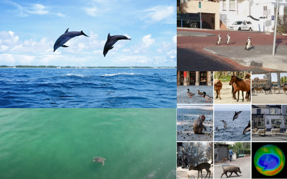

 Los animales marinos han tenido una gran trayectoria en esta cuarentena, pues al comienzo del aislamiento social obligatorio muchos de estos daban su presencia en las ciudades como pingüinos, lobos marinos; o en las costas como se han visto delfines tortugas marinas y tiburones, debido a la ausencia de humanos. Por otro lado últimamente se han visto afectados a causa de la gran cantidad de desechos que producen los humanos y tienen como destino final los ríos y mares, pues para nadie es un secreto como se hemos producido más basura y cómo esta afecta los ecosistemas
Te recomendamos leer esta noticia por parte de LA VANGUARDIA de cómo se han encontrado miles de cubrebocas en islas deshabitadas que aunque no lo veamos afecta a los animales de esta zona.
https://www.lavanguardia.com/natural/20200313/474107668765/impacto-ambiental-coronavirus-covid-mascarillas-residuos-contaminacion-playas-china.html

Podemos ayudar al planeta realizando actividades muy sencillas como por ejemplo: mejor control de basura, no usar tantos plásticos, proteger el agua y hacer de esto un hábito.
CUIDEMOS NUESTRO PLANETA!!